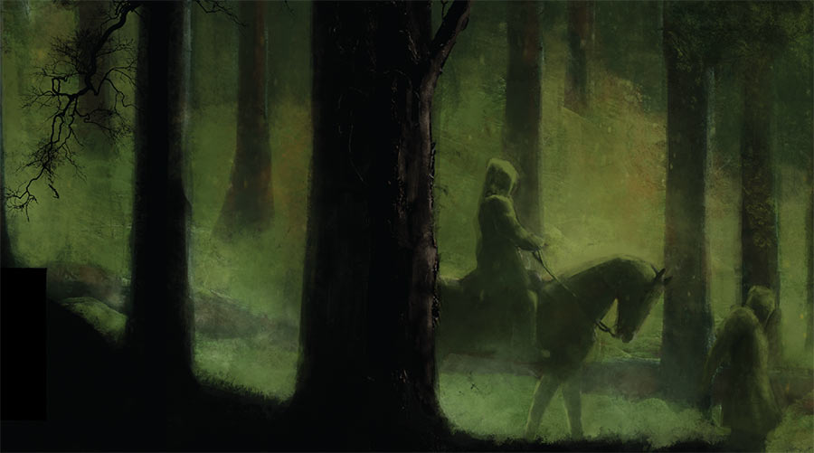
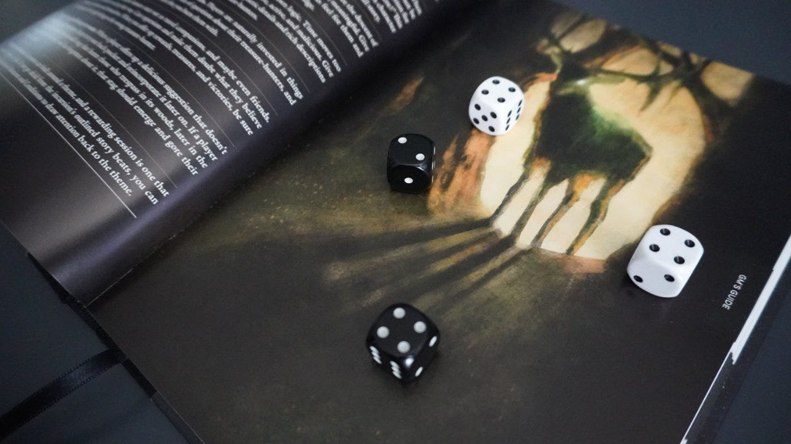
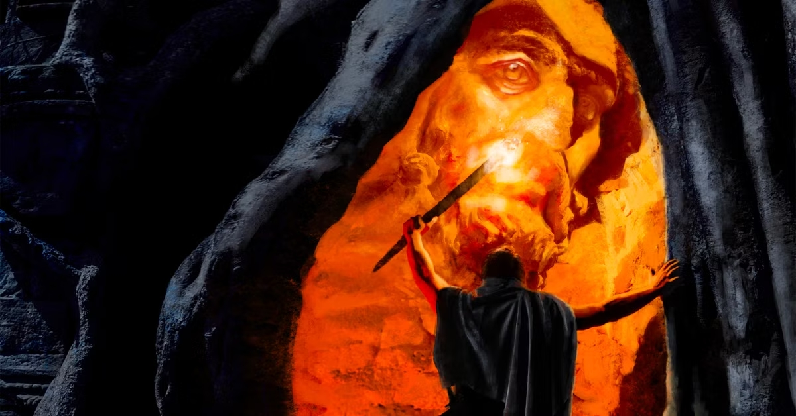

Subtítulo o descripción breve
Trophy Dark es un juego de rol de fantasía oscura y terror psicológico en el que encarnaréis a buscadores de tesoros desesperados que exploran un bosque antiguo que no los quiere allí. A medida que los buscadores de tesoros se acercan más y más al corazón del bosque, este hace todo lo posible por destrozarlos, enloquecerlos y, si tienen suerte, matarlos. Incluso si los buscadores de tesoros sobreviven a la incursión y cumplen sus objetivos personales, lo harán pagando un terrible precio y es probable que queden marcados para siempre.
Una aventura de Trophy Dark se denomina incursión. Normalmente, estas aventuras tienen una estructura de cinco anillos. Cada anillo representa una etapa de la expedición y acerca progresivamente a los personajes al tesoro y a su probable perdición.
Los anillos son una representación orientativa de la progresión; cada incursión tiene su propia estructura y contenido, pero no necesitas que los jugadores sigan un camino rígido. La idea es que la expedición avance y que cada anillo incremente la tensión.
Trophy Dark utiliza dados de seis caras para resolver situaciones inciertas. Existen dos tipos de dados:
Cuando un jugador intenta algo arriesgado, el DJ puede pedirle una tirada. La cantidad y el tipo de dados dependen de las circunstancias, las características del personaje y las habilidades que pueda utilizar.


Trophy Dark utiliza tiradas de dados de seis caras en las que se busca un seis para tener éxito combinando dados claros ligados a habilidades u ocupaciones, con dados oscuros que arriesgan aumentar la «ruina» física y mental del personaje.
Se utilizan dados de dos colores:
El procedimiento es el siguiente:
| Situación | Dados |
|---|---|
| El personaje tiene una ocupación o trasfondo pertinente | +1 claro |
| Acepta un Pacto con el Diablo | +1 claro |
| *Arriesga su cuerpo o mente | +1 oscuro |
| Realiza un ritual | +1 oscuro obligatorio |
Hay una regla especialmente importante: si el dado oscuro más alto iguala o supera al dado claro más alto, el personaje marca 1 punto de Ruina.
Además, si el jugador no está conforme con el resultado y su dado más alto es claro, puede agregar un dado oscuro (Arriesga su cuerpo o mente) y volver a lanzar todos los dados. Esta acción se puede repetir, pero si el dado oscuro termina dominando, sufrirá Ruina.
| Resultado más alto | Consecuencia |
|---|---|
| 1, 2 o 3 | Fracaso. La situación empeora. |
| 4 o 5 | Éxito con una complicación. |
| 6 | Éxito sin complicaciones adicionales. |
Si el jugador acepta, recibe un dado claro adicional. Esta consecuencia del pacto ocurre independientemente del resultado de la tirada.
Ejemplos
El jugador puede rechazar cualquier pacto. También puede negociar sus términos. Este mecanismo permite que los jugadores decidan cuánto están dispuestos a sacrificar para conseguir sus objetivos.
La decisión de ayudar puede ocurrir antes o después de conocer el resultado de la tirada. Además, se puede recibir ayuda de más de un jugador.
Primero se decide que está en juego, luego se lanzan los dados.
Resolución: Gana quien tenga mayor cantidad de 6, si hay empate se cuentan los 5, los 4 y así sucesivamente.
Cada dado oscuro que tenga un 1 aumenta tu ruina en 1. Gana un estado por cada ruina obtenida
Cuando un personaje presencia algo perturbador o experimenta una situación traumática, el DJ puede solicitar una Tirada de Ruina: El jugador lanza 1 dado oscuro:
La Ruina representa el deterioro físico, psicológico y espiritual del personaje. Cuanto más se adentran los buscadores en el bosque, más difícil resulta conservar su humanidad.
Estados: Es una alteración física, psicológica o sobrenatural que afecta al personaje. Las Condiciones son principalmente narrativas: permiten representar cómo el entorno transforma a los personajes.
Cuando un personaje alcanza 5 puntos de Ruina, puede comenzar a reducirla mediante acciones que perjudiquen a sus compañeros o favorezcan los intereses del bosque.
El procedimiento es:
*La Ruina nunca puede reducirse por debajo de su valor inicial.
El juego está construido sobre el principio de "Play to Lose"
*La Ruina nunca puede reducirse por debajo de su valor inicial.
Aquí puedes agregar tablas, referencias y otros recursos.
Tira por separado para cada rasgo o usa una misma tirada para la base del personaje.
—
—
—
—
—
—
—